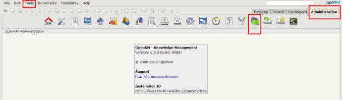
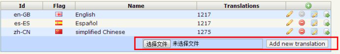
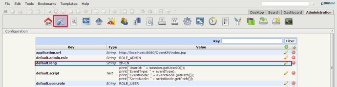
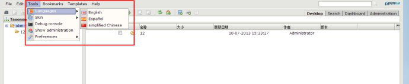

OpenKM是一个开放源代码的电子文档管理系统，它的特点是可用于大型公司或是中小企业， 适应性比较强。 并且在知识管理方面的加工，提供了更加灵活和成本较低的替代应用。
一、准备工作
1. 简介
OpenKM是一个开放源代码的电子文档管理系统，它的特点是可用于大型公司或是中小企业， 适应性比较强。 并且在知识管理方面的加工，提供了更加灵活和成本较低的替代应用。
2. 安装Jdk
官网下载jdk1.8最新的版本jdk-8u151-linux-x64.tar.gz包体
解压jdk-8u151-linux-x64.tar.gz到/usr/local/目录下
Tar xf /opt/soft/jdk-8u151-linux-x64.tar.gz –C /usr/local
配置jdk的环境变量，修改/etc/profile，
Vim /etc/profile :
export JAVA\_HOME=/usr/local/jdk1.8.0\_151
export JRE\_HOME=$JAVA\_HOME/jre
export CLASSPATH=.:$JAVA\_HOME/lib:$JRE\_HOME/lib
export PATH=$JAVA_HOME/bin:$PATH
加载一下环境变量
#source /etc/profile
验证环境变量是否可以
# Java –version
二、安装
1. 安装OpenKM
安装完Java后，只需要下载一个2.9MB的OKMInstaller.jar就可以部署在服务器自动配置和下载Tomcat和OpenKM以及相关的依赖和工具。
下载OKMInstaller.jar命令
wget [https://sourceforge.net/projects/openkm/files/common/OKMInstaller.jar]
2. 创建数据库用户openkm
useradd openkm
3. 安装MariaDB数据库
yum install mariadb-server
设置成开机启动并开启MariaDB:
systemctl enable mariadb
systemctl start mariadb
OpenKM支持的数据库类型主要有以下：
MariaDB (mariadb)
MySQL (mysql)
PostgreSQL (posgresql)
SQL Server (sqlserver)
Oracle (oracle)
HSQLDB (hsqldb)
H2 (h2)
不建议使用默认的HSQLDB (hsqldb)，因为在实际使用过程中会出现一个OpenKM.lobs的文件太大甚至达到243GB。
4. 配置数据库
# mysql
CREATE DATABASE okmdb DEFAULT CHARACTER SET utf8 DEFAULT COLLATE utf8_bin;
CREATE USER openkm@localhost IDENTIFIED BY 'openkm';
GRANT ALL ON okmdb.* TO openkm@localhost WITH GRANT OPTION;
具体如下：
[root@VM\_112\_183_centos ~\]# mysql
Welcome to the MariaDB monitor. Commands end with ; or \\g.
Your MariaDB connection id is 3
Server version: 5.5.56-MariaDB MariaDB Server
Copyright (c) 2000, 2017, Oracle, MariaDB Corporation Ab and others.
Type 'help;' or '\\h' for help. Type '\\c' to clear the current input statement.
MariaDB \[(none)\]> CREATE DATABASE okmdb DEFAULT CHARACTER SET utf8 DEFAULT COLLATE utf8_bin;
Query OK, 1 row affected (0.00 sec)
MariaDB \[(none)\]> CREATE USER openkm@localhost IDENTIFIED BY 'openkm';
Query OK, 0 rows affected (0.01 sec)
MariaDB \[(none)\]> GRANT ALL ON okmdb.* TO openkm@localhost WITH GRANT OPTION;
Query OK, 0 rows affected (0.00 sec)
MariaDB \[(none)\]> exit
Bye
5. 安装过程
这一部分是对OpenKM的数据库类型及账号密码配置，其中对数据库的账号密码必须与上面数据库配置的保持一致
[root@VM\_112\_183_centos opt\]# java -jar OKMInstaller.jar
Running in Linux: 0.9.3-CE (build: 32e830e)
Linux distro: centos (CentOS Linux - 7)
Local host: localhost (127.0.0.1)
Java version: 1.8.0_151
Free disk size: 44.3 GB
RAM size: 992.7 MB
CPU cores: 1
Current directory: /opt
Database \[h2\]: mariadb
Database host \[localhost\]:
Database name \[okmdb\]:
Database user \[openkm\]:
Database password \[3SlGtCoumvYG\]: openkm
\-\-\-\-\-\-\-\-\-\-\-\-\-\-\-\-\-\-\-\-\-\-\-\-\-\-\-
\- Database: mariadb
\- Database host: localhost
\- Database name: okmdb
\- Database user: openkm
\- Database password: openkm
\- Install version: 6.3.4
\-\-\-\-\-\-\-\-\-\-\-\-\-\-\-\-\-\-\-\-\-\-\-\-\-\-\-
Start install process? \[y/N\]: y
\- Downloading Tomcat: 7.0.61
....*.... 10% ....*.... 20% ....*.... 30% ....*.... 40% ....*.... 50% ....*.... 60% ....*.... 70% ....*.... 80% ....*.... 90% ....*.... 100%
\- Unzipping archive... Done!
\- Fix permissions... Done!
\- Downloading OpenKM: 6.3.4
....*.... 10% ....*.... 20% ....*.... 30% ....*.... 40% ....*.... 50% ....*.... 60% ....*.... 70% ....*.... 80% ....*.... 90% ....*.... 100%
\- Unzipping archive... Done!
\- Check archive integrity... Done!
以下为软件依赖和OpenKM的工具安装过程
\- Copy OpenKM
\- Configure OpenKM
\- Configure service
\- Install dependencies
Loaded plugins: fastestmirror, langpacks
Loading mirror speeds from cached hostfile
Resolving Dependencies
--\> Running transaction check
---\> Package pciutils.x86_64 0:3.5.1-1.el7 will be updated
---\> Package pciutils.x86_64 0:3.5.1-2.el7 will be an update
--\> Processing Dependency: pciutils-libs = 3.5.1-2.el7 for package: pciutils-3.5.1-2.el7.x86_64
--\> Running transaction check
---\> Package pciutils-libs.x86_64 0:3.5.1-1.el7 will be updated
---\> Package pciutils-libs.x86_64 0:3.5.1-2.el7 will be an update
--\> Finished Dependency Resolution
Dependencies Resolved
\*\*\*\*\*\*
#此处略去***
三、配置
1. 关闭防火墙
vim /etc/selinux/config
将其中的SELINUX设置为disabled，开机默认关闭防火墙
SELINUX=disabled
并执行命令
setenforce 0
临时关闭防火墙
systemctl stop firewalld
2. 启动或关闭OpenKM服务
sh /opt/tomcat-8.5.24/bin/startup.sh
sh /opt/tomcat-8.5.24/bin/shutdown.sh
四、汉化openkm
关于中文
1、下载中文包：进入http://wiki.openkm.com/index.php/Language_Packs，点击对应版本的Chinese simple，点击下载最新版。
2、帐号okmAdmin，密码：admin 登录系统后，点击最右上边的“administration”，或着点 击“Tools”-“show administration”，进入管理员页面。
3、点击语言图标：紫色绿色的那个图标。

图1
4、选择语言文件，然后点击“add new translation”

5、点击图1中的第二个图标，进入设置页面，把默认语言设置成中文，如下图所示：

6、当前语言切换：

五、安装swftools字体
1、从官网下载 swftools，这里下载的是 0.9.2 版本：
wget http://www.swftools.org/swftools-0.9.2.tar.gz
2、下载后得到 swftools-0.9.2.tar.gz 文件，我们来将其解压：
tar vxzf swftools-0.9.2.tar.gz
3、解压后得到 swftools-0.9.2 文件件，接下来我们进入到这个目录后做初始化配置：
cd swftools-0.9.2
./configure --prefix=/usr/local/swftools
4、编译并编译安装：
make
make install
5、为 swftool 配置环境变量：
vim /etc/profile
export PATH=$PATH:/usr/swftools/bin/
6、下载 xpdf-chinese-simplified.tar.gz 简体中文字体解析文件；
7、将 xpdf-chinese-simplified.tar.gz 文件上传至 /usr/local/share/xpdf 目录中，如果没有 /usr/local/share/xpdf 目录则创建：
mkdir -p /usr/local/share/xpdf
8、将 xpdf-chinese-simplified.tar.gz 解压缩：
tar -zxvf xpdf-chinese-simplified.tar.gz
9、将解压得到的 xpdf-chinese-simplified 文件夹更名为 chinese-simplified：
mv xpdf-chinese-simplified chinese-simplified
10、下载字体 Gbsn00lp.ttf 和字体 gkai00mp.ttf 并将其上传至 /usr/local/share/xpdf/chinese-simplified/CMap 目录：
cd /usr/local/share/xpdf/chinese-simplified/CMap
11、保存并退出
Esc –> wq! –> 回车
六、访问Openkm
默认访问OpenKM的url：http://localhost:8080/OpenKM/ 账号密码默认；